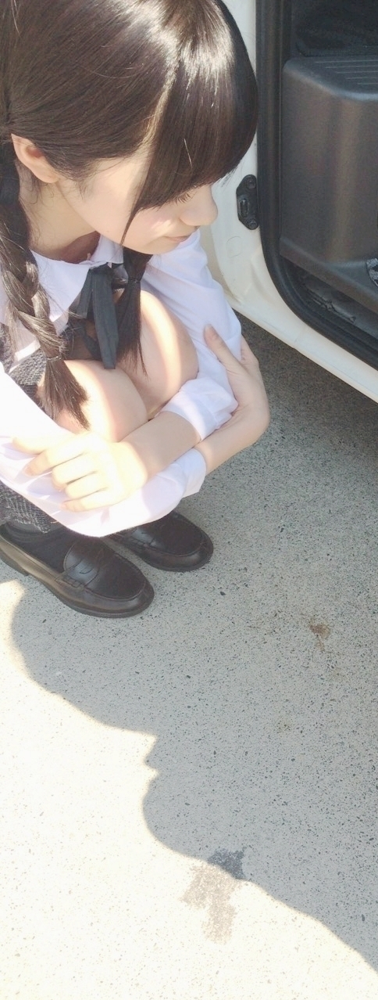
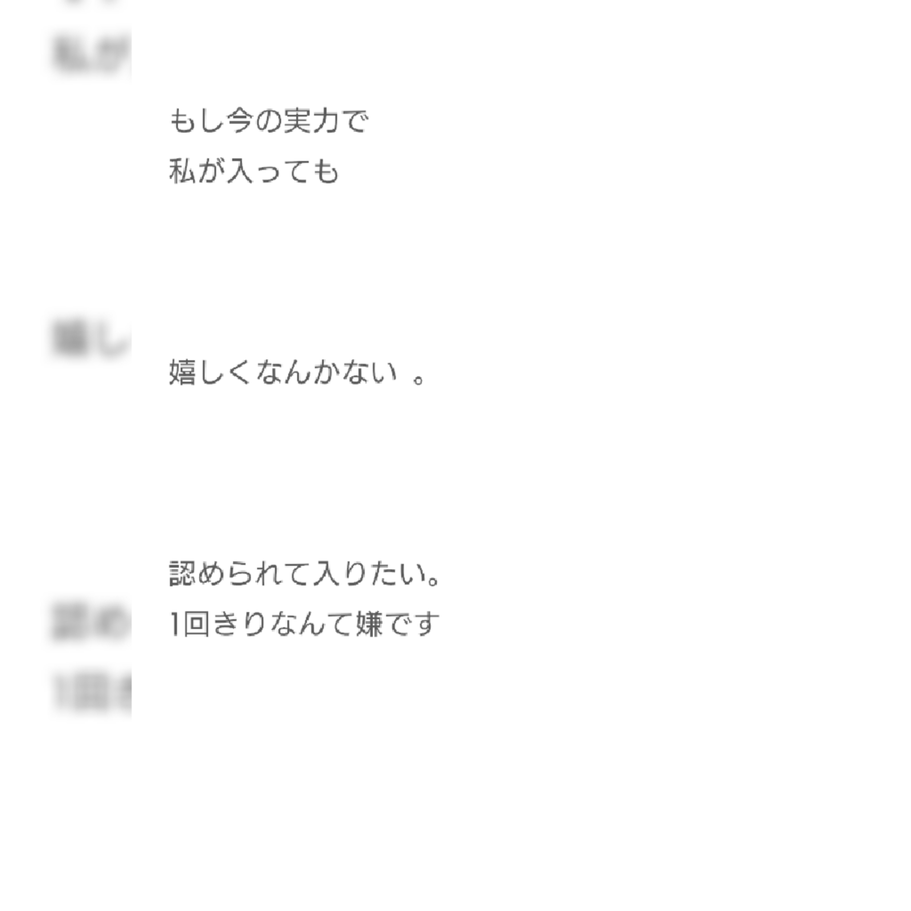
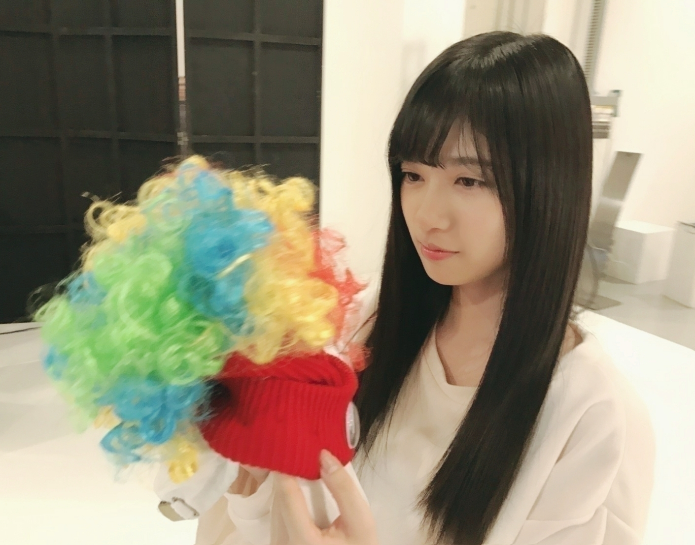
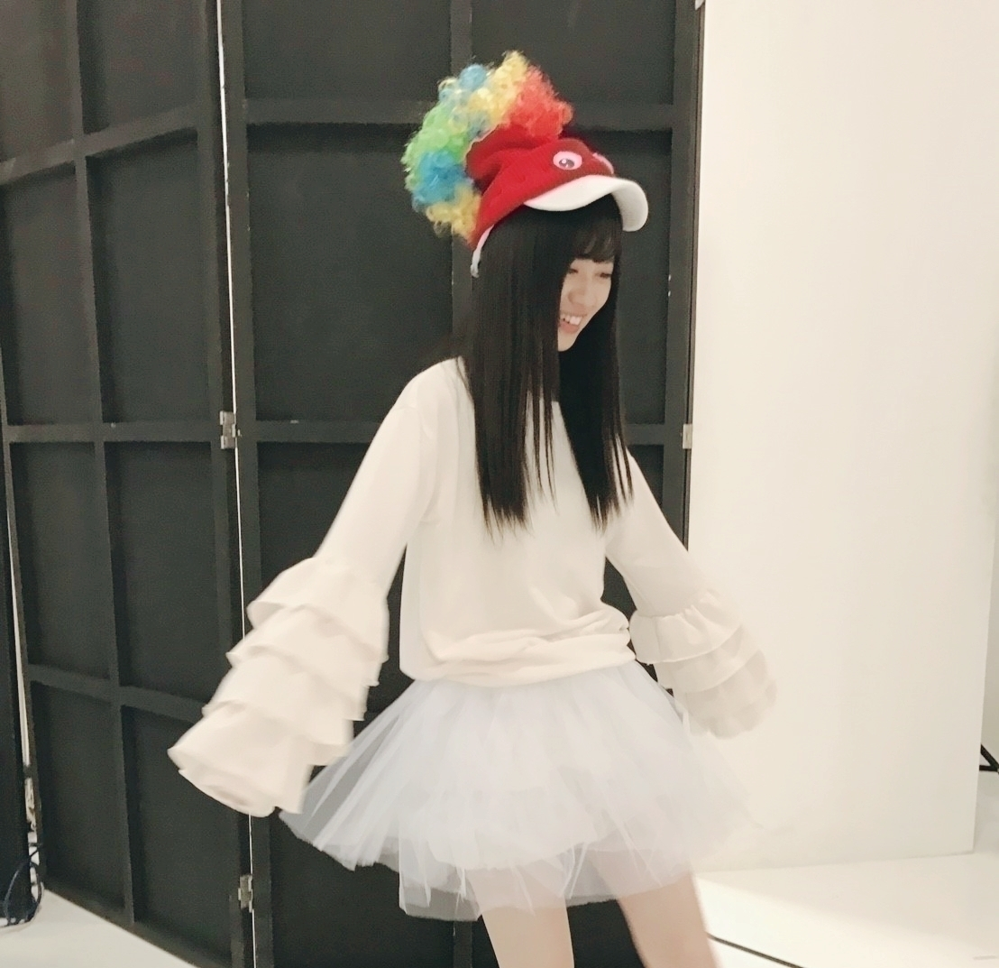

2017/0201Wed唯一無二

お疲れ様です！
寺田蘭世です
宜しくお願い致します！
17枚目シングルは
選抜メンバーとして活動させて頂きます。
何日も書きたい事まとめていたのですが
上手く伝わるか、、、
でも、収録の時にも言ったのですが結果は
1つ1つの行動、仕草で示していければいいなって
昔から
センターになりたいです。
とずっと言ってきました。
当初は大半の方が良くは思ってなかったのが事実です。
あんな子に何ができる。
絶対無理。
そう言われてもずっと
私は運とかだけで無く、ちゃんと向き合ってもらってちゃんと見てもらってから選抜やセンターになりたいと考えていました。
時間は経ちました。
あっという間な気もしますが振り返ってみた時
とんでもない長さと道のりだったなと、、、
今回初選抜
17枚目選抜メンバーの中では唯一の「初選抜」です。
初選抜だからこその
持ち味を出せればと思ってます。
今年に入ってから
より、次は絶対選抜だよっと声をかけてもらうことが増えた事少しずつ自分の目標に向かって歩けていると実感できた時は普段自信無い自分に力を皆さんが貸してくれました。
ちゃんと見てくれてる人は居るんだと凄く喜びました。
私にとって去年は2016年は大きな波が沢山ありました。
15枚目の夏では
加入してから1番
心が脆くなりました。
でも、そんなとき
先輩方や同期やスタッフさん近くにいる人達が支えてくれました。
本当に弱っちゃいけないって人に弱い所を見せて迷惑掛けたくないっていつもその事ばかりを考えて行動していたのですが
たまには甘えたり、吐き出すのも大事だなって
自分みたいな人間に優しく手を差し伸べてくれて凄く凄く嬉しかった。
去年の夏は私に新しい感情をくれました。
そんな夏を乗り越えて
16枚目では
アンダーセンターを務めさせて頂き
日本武道館でのライブを
16枚目アンダーメンバーで
立たせてもらえたこと
3、4年くらい前の私がこうなるって誰が予想してただろうって考えるときがあります、、、
未来って自分なりの本気出せば少しは変えられるんだってだから私が乃木坂46に在籍している以上、実証していきたいと思います。
もう、ここには
書ききれない程
嬉しい事
悲しい事
悔しい思い
色んな感情を得て
運で選ばれたとかでなく
選抜が現実となった今は
ちゃんと地に足ついて
選抜として認めて頂けて良かったと思ってます。
何があっても
一緒に歩んでくれるファンの人を思い感謝して行動するし
こんな私を見守ってくれるメンバーや
スタッフさんには
とても感謝して
勿論、ここまで一番近くで見てくれている家族にも感謝してる！
その、ぶきっちょだし自分の感情出すの下手だし
自信無いないっていつも引っ込んじゃうけど
感謝の気持ちと
自分の心の内に秘めてある目標に向かって走る姿勢だけは
変わることなく頑張りますので宜しくお願い致します！
でも、小さな課題も大きな壁を1つ2つ越えてもまだまだ満足してません。
懐かしいような
つい最近の事のような
今読み返すと当時の自分には無謀と思われても仕方ない様な内容ばかりでした。
13枚目シングル
2015年9月20日の事

昔の私はこう綴っていました。
今2017年の
私はちゃんと
叶えて生きています。
それでも
常に自分の
現状には満足をしない、、
卒業するその日まで
毎日バタバタして
乃木坂46を卒業する日に
良かった楽しかったってなればいいなって
''寧ろここから''
今まで一緒に歩いてくれたファンの皆様には本当に本当に感謝してます。
年数とか関係無いけど
研究生の頃から応援してくれた皆さん
おまたせしました。
昇格してアンダーメンバーから応援してくださった皆さん
見つけてくれてありがとうございます
見つけてくれた人が居るからこそ今の私があります。
勿論これからも何があるかなんて誰にもわからないけど自分の気持ち伝えないと
叶いそうな夢も叶わないかも、、、
うーん
重たいって思われるかもですがw(:_;)w
寺田蘭世として生きる人生は1回きりです。
皆さんも自分として生きるのは1回きりです。
他の人の意見も
聞き入れるのは
凄く大切なこと
でも、自分の決めた事は
後悔のないように成し遂げる生きる。
それが自分にとっても最高だし、見てる人も清々しいんじゃないかな。
誰も私の代わりは出来ないし
私も誰かの代わりは出来ない誰かの代わりになるなんてことも無い。
私は、これからも
有言実行していきます。
その為にこれから
皆さんが必要です。
一緒に嬉しい事
辛い事楽しい事悲しい事
全部共有したいです！
私は
全然良い意味で
満足してませんよ！
でも、第一は本当に全ての人に感謝してます！！
今すごく実感が湧いてます！！
こんなに嬉しい事ってありません！
この先も応援しててよかったって言っていただけるような関係性でいたいです！
今年は飛ぶぞ！
酉年！
私は、寅年力強く生きろ！
 
2017/02/01 09:30
コメント(2692)
選抜入りおめでとう！！
アンダーの３列目の頃から蘭世を推してる俺からしたら昨日は感動する選抜発表になりました。
選抜入りしたら世間的にも名前知られるから
嬉しいです。けど蘭世の行動に反対する人もおるかもしれないけど俺たち蘭世推しはいつも
蘭世の味方だから安心して！！
これから夢だった選抜センター目指しておれたちと一緒にがんばっていこう！！！
みんな応援してるぞ！！
今年お願いしたのは蘭世フロント入り！！
蘭世なら選抜入りするって前世から決まってたから
アンダーの３列目の頃から蘭世を推してる俺からしたら昨日は感動する選抜発表になりました。
選抜入りしたら世間的にも名前知られるから
嬉しいです。けど蘭世の行動に反対する人もおるかもしれないけど俺たち蘭世推しはいつも
蘭世の味方だから安心して！！
これから夢だった選抜センター目指しておれたちと一緒にがんばっていこう！！！
みんな応援してるぞ！！
今年お願いしたのは蘭世フロント入り！！
蘭世なら選抜入りするって前世から決まってたから
ほんとにおめでとう！
インフルに気をつけて
らんぜ！！
選抜おめでとう！
らんぜじゃん✋(◉ ω ◉｀)よお
ブログ更新ありがと、選抜おめでとー
おはようございます
こんにちは
こんばんは
そして、おめでとう！
祝初選抜！！16枚目でアンダーセンターで武道館を圧倒した蘭世ちゃんは次は絶対選抜入るって、入らなきゃおかしいって思うくらいだったよ。目標に一歩近づいたね。素直に自分のことみたいに嬉しいし、最近テンションが高いです。おめでとう。
17枚目は選抜MVにも、音楽番組にもいるんだよね。ファンにとっては夢のようだけど、今の蘭世ちゃんならそこにいることが相応しいと思います。そのくらいの力があるし、後押しするファンもたくさんいます。だから、また最弱とか言わないで自信を持って突き進んでね。どんな蘭世ちゃんも大好きだし応援するけど、初選抜の蘭世ちゃんは今まで以上に応援します！
5日の横浜個握4.5部にお邪魔します。幕張にオールブラックで行ったんだけど、覚えているかな？意識高いって言ってくれてありがとう(笑)次はどんな格好で行くか迷い中です。そのあとはバスラにも行きます。全力で楽しむね。
蘭世ちゃん、こちらこそ
これから
改めて宜しくお願い致します！！
お身体に気をつけて頑張ってね。
ビタミンとって風邪引かないようにね！
携帯の充電にも気をつけて(笑)
こんにちは
こんばんは
そして、おめでとう！
祝初選抜！！16枚目でアンダーセンターで武道館を圧倒した蘭世ちゃんは次は絶対選抜入るって、入らなきゃおかしいって思うくらいだったよ。目標に一歩近づいたね。素直に自分のことみたいに嬉しいし、最近テンションが高いです。おめでとう。
17枚目は選抜MVにも、音楽番組にもいるんだよね。ファンにとっては夢のようだけど、今の蘭世ちゃんならそこにいることが相応しいと思います。そのくらいの力があるし、後押しするファンもたくさんいます。だから、また最弱とか言わないで自信を持って突き進んでね。どんな蘭世ちゃんも大好きだし応援するけど、初選抜の蘭世ちゃんは今まで以上に応援します！
5日の横浜個握4.5部にお邪魔します。幕張にオールブラックで行ったんだけど、覚えているかな？意識高いって言ってくれてありがとう(笑)次はどんな格好で行くか迷い中です。そのあとはバスラにも行きます。全力で楽しむね。
蘭世ちゃん、こちらこそ
これから
改めて宜しくお願い致します！！
お身体に気をつけて頑張ってね。
ビタミンとって風邪引かないようにね！
携帯の充電にも気をつけて(笑)
らんらん( ˊ̱˂˃ˋ̱ )
選抜おめでとう。
頑張れ！
頑張れ！
蘭世ブログ更新ありがとう！！
まずは初選抜おめでとう。ここまで来るまでにはファンに見えないような努力も重ねただろうし、大変な事も絶対多かったと思います。それでもくじけずにここまでやり切った、今回の選抜入りは寺田蘭世の「努力の成果」が形として表れたものだと思います。
でも、去年の12月9日、アンダーライブ千秋楽でも言っていた通り、ここはまだ「夢の通過点」のはずです。
こまめなモバメ、ブログの更新、握手会で見せる等身大の寺田蘭世、ライブでの全身を使ったパフォーマンス、番組で時折見せるくしゃっとした可愛い笑顔。その全部が好きです。
まだまだここで終わりじゃない！次の通過点、福神入りを目指して頑張って下さい！！そしていつの日か選抜センターになる日を待っています！！
蘭世の勢い止まらんぜ！！！！
まずは初選抜おめでとう。ここまで来るまでにはファンに見えないような努力も重ねただろうし、大変な事も絶対多かったと思います。それでもくじけずにここまでやり切った、今回の選抜入りは寺田蘭世の「努力の成果」が形として表れたものだと思います。
でも、去年の12月9日、アンダーライブ千秋楽でも言っていた通り、ここはまだ「夢の通過点」のはずです。
こまめなモバメ、ブログの更新、握手会で見せる等身大の寺田蘭世、ライブでの全身を使ったパフォーマンス、番組で時折見せるくしゃっとした可愛い笑顔。その全部が好きです。
まだまだここで終わりじゃない！次の通過点、福神入りを目指して頑張って下さい！！そしていつの日か選抜センターになる日を待っています！！
蘭世の勢い止まらんぜ！！！！
ブログありがとう！
選抜おめでとう！
これからも頑張ってね！
選抜おめでとう！
これからも頑張ってね！
初選抜おめでとう！
期待してるからね！
自分なりに、蘭世なりに、頑張れ。
期待してるからね！
自分なりに、蘭世なりに、頑張れ。
蘭世選抜おめでとう〜〜
らんらんらんぜ！おめでと！
蘭世ブログ更新ありがとう
そして、改めて初選抜おめでとう。
僕が蘭世を知るようになったのはクリライ千秋楽でのこと。
真っ直ぐで、意志が強く、清冽な響きがある蘭世の眼差しに心を動かされました。同い歳なのにこんなに頑張っている子がいるんだと衝撃を受けました。
それはブログを読んでても感じます。
丁寧で、気品があって、力強い蘭世のブログが大好きです。内に秘めた熱い想いに応えてあげたい。そう思わせてくれます。
脆さを自覚した上でそういう強さを引き出せる人に僕は憧れます。
蘭世に出会えて本当によかったって思う。これからも、蘭世の勢いとまらんぜの勢いで頑張ってほしい。焦らず、ゆっくりでいい、蘭世のペースでで頑張ってほしい。大丈夫、みんな蘭世のことを支えてくれる。
これからも蘭世の夢を一緒に追いかけさせてください。ずーっと応援するからね
追伸︰モバメ取り始めました
そして、改めて初選抜おめでとう。
僕が蘭世を知るようになったのはクリライ千秋楽でのこと。
真っ直ぐで、意志が強く、清冽な響きがある蘭世の眼差しに心を動かされました。同い歳なのにこんなに頑張っている子がいるんだと衝撃を受けました。
それはブログを読んでても感じます。
丁寧で、気品があって、力強い蘭世のブログが大好きです。内に秘めた熱い想いに応えてあげたい。そう思わせてくれます。
脆さを自覚した上でそういう強さを引き出せる人に僕は憧れます。
蘭世に出会えて本当によかったって思う。これからも、蘭世の勢いとまらんぜの勢いで頑張ってほしい。焦らず、ゆっくりでいい、蘭世のペースでで頑張ってほしい。大丈夫、みんな蘭世のことを支えてくれる。
これからも蘭世の夢を一緒に追いかけさせてください。ずーっと応援するからね
追伸︰モバメ取り始めました
がんばれ！
選抜おめでと！！
蘭世好きだぁぁぁ笑笑
また夜コメントします！
蘭世好きだぁぁぁ笑笑
また夜コメントします！
蘭世初選抜おめでとう！
ずっとセンターになりたいって言ってた
蘭世が初めて選抜に選ばれて
涙が出るほど嬉しかった。
私は奈々未さん推しだから偉そうに言えないけど、
蘭世にはめっちゃ活躍してほしい！
ずっとセンターになりたいって言ってた
蘭世が初めて選抜に選ばれて
涙が出るほど嬉しかった。
私は奈々未さん推しだから偉そうに言えないけど、
蘭世にはめっちゃ活躍してほしい！
蘭世初選抜ホントにおめでと!!
TV見てて名前呼ばれた時ホントに嬉しかった
17thに向けてや今後の思いも聞けたしこれからその目標が達成できるように陰ながら応援していきます！
TV見てて名前呼ばれた時ホントに嬉しかった
17thに向けてや今後の思いも聞けたしこれからその目標が達成できるように陰ながら応援していきます！
がんばれ！
蘭世、初選抜おめでとう〜‼︎
発表を聞いた時は本当に嬉しかった‼︎
選抜の蘭世は今までまた違ったものが見えると思うから楽しみ‼︎全力で応援するね‼︎
発表を聞いた時は本当に嬉しかった‼︎
選抜の蘭世は今までまた違ったものが見えると思うから楽しみ‼︎全力で応援するね‼︎
いつもお疲れ様です(・∀・)b
選抜入りおめでとうございますついに念願の選抜ですね( ･ㅂ･)و ̑̑
選抜として活躍する姿を期待しておりますね(・∀・)ﾆﾔﾆﾔ
選抜入りおめでとうございますついに念願の選抜ですね( ･ㅂ･)و ̑̑
選抜として活躍する姿を期待しておりますね(・∀・)ﾆﾔﾆﾔ
これからも蘭世らしく頑張ってね！！！
選抜本当におめでとう！
今年の蘭世の活躍が楽しみです
応援してます⸜(* ॑▿ ॑* )⸝
今年の蘭世の活躍が楽しみです
応援してます⸜(* ॑▿ ॑* )⸝
よしっ‼︎
いっちょやらかすか‼︎
頑張ろうぜ(^^)
おっさんは、いつだって蘭世の味方だよ♪
応援させてくれてありがとう‼︎
暴走電機屋
蘭世のブログ
たまらんぜ！
たまらんぜ！
やぁ(*ﾟ▽ﾟ)ﾉ蘭世
ブログ更新ありがとう！
ゆっくり読んでコメするね！
きっとまた後で(*ﾟ▽ﾟ)ﾉ
蘭世選抜おめでとう
カワイイ( ☆∀☆)
蘭世ーブログ更新ありがとー！
そして選抜入りおめでとう
そして選抜入りおめでとう
おめでとう
まずはおめでとう。
素直に嬉しいよ。
まだまだこれからも応援しています。
蘭世の勢い止まらんぜ。
止まることなくこの坂を上っていってください。
素直に嬉しいよ。
まだまだこれからも応援しています。
蘭世の勢い止まらんぜ。
止まることなくこの坂を上っていってください。
初選抜おめでとうございます
良かったですね
今週の握手会でもおめでとうを
言いに行きます
君を応援して良かったです
良かったですね
今週の握手会でもおめでとうを
言いに行きます
君を応援して良かったです
おめでとうございます。
いちなる想いはいつか通じると思います。
葛藤しながらも笑顔で頑張る寺田さんを応援しています、頑張ってください。
いちなる想いはいつか通じると思います。
葛藤しながらも笑顔で頑張る寺田さんを応援しています、頑張ってください。
初選抜おめでとう！！
自分は本当に嬉しいけど、これがゴールじゃなくて、寧ろこっからなんよね！！
これからはより一層応援します！頑張ろうね
自分は本当に嬉しいけど、これがゴールじゃなくて、寧ろこっからなんよね！！
これからはより一層応援します！頑張ろうね
改めて選抜入りおめでとうございます！
今年の出たしいいスタートがきれたと思います！
１回の選抜だけにならないように出来ることを一つ一つ頑張ってくださいね！
これからも一生蘭世推し！
らんぜのいきおいとまらんぜ！
今年の出たしいいスタートがきれたと思います！
１回の選抜だけにならないように出来ることを一つ一つ頑張ってくださいね！
これからも一生蘭世推し！
らんぜのいきおいとまらんぜ！
ブログ更新ありがとう(^^)
改めて、選抜入りおめでとうございます( .. )
乃木坂工事中見ている最中、涙がぽろりと零れてしまいました。
研究生から応援してたわけでも、最初の方から応援してたわけでもないけど、蘭世が選抜に入る、ということはやはり嬉しいものでした。
今回はアンダーセンターを経て選抜入り、だから、みんなに認められているし、絶対に1回きりにはさせない。
これからも変わらず蘭世を応援していきます。
いつかセンターに立つ日まで。
改めて、選抜入りおめでとう！
一生蘭世推しのゆうたより
改めて、選抜入りおめでとうございます( .. )
乃木坂工事中見ている最中、涙がぽろりと零れてしまいました。
研究生から応援してたわけでも、最初の方から応援してたわけでもないけど、蘭世が選抜に入る、ということはやはり嬉しいものでした。
今回はアンダーセンターを経て選抜入り、だから、みんなに認められているし、絶対に1回きりにはさせない。
これからも変わらず蘭世を応援していきます。
いつかセンターに立つ日まで。
改めて、選抜入りおめでとう！
一生蘭世推しのゆうたより
ブログ更新ありがとうー!!
蘭世の勢い止まらんぜーヽ(・∀・)ノ
前のブログにも書いたけど、初選抜
おめでとう(^○^)
今まで応援してきた甲斐があるよ!!
この流れが継続しますように。
17thの握手会も応募するね～
応援しているよ!!
蘭世の勢い止まらんぜーヽ(・∀・)ノ
前のブログにも書いたけど、初選抜
おめでとう(^○^)
今まで応援してきた甲斐があるよ!!
この流れが継続しますように。
17thの握手会も応募するね～
応援しているよ!!
蘭世ほんとに選抜おめでとう！
結構前から推してたけど前握手会行って思ったんが、この子推しててよかったって思えたこと。
ほんとに蘭世の直向きな姿勢がすごく俺の中には響いてる！
そのおかげで俺もこのままじゃダメだって必死に努力するようにしてる。
ほんとに蘭世のおかげで成長できてる。
これからもその前向きな姿勢で頑張って欲しい！
また握手会行くからその時に直接伝えるな！
蘭世選抜おめでとう！！！
めっちゃ嬉しかった！！
これからテレビでの新曲披露が待ち遠しくて仕方ないです！！
あと、風邪大丈夫？？
乾燥しやすい時期だからこそ気をつけてね！！
2月の横浜の個握の日が自分の誕生日なのですごい楽しみです！！
めっちゃ嬉しかった！！
これからテレビでの新曲披露が待ち遠しくて仕方ないです！！
あと、風邪大丈夫？？
乾燥しやすい時期だからこそ気をつけてね！！
2月の横浜の個握の日が自分の誕生日なのですごい楽しみです！！
蘭世選抜本当におめでとう！！
選抜センターへ向けての第一歩、大きな一歩だね！
本当に昨年末の武道館では凄いオーラで輝いてたから、その輝きを選抜でも発揮してどんどん前に行ってね、期待してるよ！
選抜センターへ向けての第一歩、大きな一歩だね！
本当に昨年末の武道館では凄いオーラで輝いてたから、その輝きを選抜でも発揮してどんどん前に行ってね、期待してるよ！
選抜おめでとう！
蘭世はセンター目指してるからこれからが本番って感じかな？
自分は蘭世がセンターに選ばれるようにずっと応援してるよ！
17thの握手会もたくさん行きますよ
このまま、蘭世の勢いとまらんぜ‼︎でセンターまで上り詰める日まで応援し続けるね
では、
蘭世はセンター目指してるからこれからが本番って感じかな？
自分は蘭世がセンターに選ばれるようにずっと応援してるよ！
17thの握手会もたくさん行きますよ
このまま、蘭世の勢いとまらんぜ‼︎でセンターまで上り詰める日まで応援し続けるね
では、
幻や幻想のような事を打ち立ててそれを幻想や幻のままで終わらせない。そんな寺田蘭世という女性がかっこいいです。
UVERworldのナノセカンドという曲にぴったりだなと思いました。
UVERworldのナノセカンドという曲にぴったりだなと思いました。
蘭世〜、選抜嬉しいよ！
17thは絶対握手行くから待っててね！！
17thは絶対握手行くから待っててね！！
蘭世お疲れ様
いい話すぎて感動したよ
蘭世のそういう真剣に考えてからこそいろんな悩みや不安もありでも正直に嬉しさを表現できるとこがめっちゃ好きです
本当に選抜選ばれてよかったね
ずっとセンターになりたいって言ってきてまず選抜に入れてここからが本当のスタートラインだね！
これから選抜入っての悩みや不安もあるだろうけど、それでも折れずに蘭世らしく乗り越えて行って近い未来に本当にセンターになれたらいいね！
まずは選抜入りおめでとう！
17thいいものを作って行こう
これからも頑張って行こう！
らんぜの勢いとまらんぜーーーー
いい話すぎて感動したよ
蘭世のそういう真剣に考えてからこそいろんな悩みや不安もありでも正直に嬉しさを表現できるとこがめっちゃ好きです
本当に選抜選ばれてよかったね
ずっとセンターになりたいって言ってきてまず選抜に入れてここからが本当のスタートラインだね！
これから選抜入っての悩みや不安もあるだろうけど、それでも折れずに蘭世らしく乗り越えて行って近い未来に本当にセンターになれたらいいね！
まずは選抜入りおめでとう！
17thいいものを作って行こう
これからも頑張って行こう！
らんぜの勢いとまらんぜーーーー
ブログ更新ありがとう。本当に選抜おめでとう。
選抜発表を見ながらガッツポーズしながら泣いて、このブログを見ながら泣いてしまいました。
1度きりの人生、自分も頑張ろうと元気を貰いました。ありがとううぅ〜。
満足してないって書いてあってて、嬉しいです。センター目指して一緒に頑張って行こう！
選抜発表を見ながらガッツポーズしながら泣いて、このブログを見ながら泣いてしまいました。
1度きりの人生、自分も頑張ろうと元気を貰いました。ありがとううぅ〜。
満足してないって書いてあってて、嬉しいです。センター目指して一緒に頑張って行こう！
らんぜ！ブログ更新ありがとう！
ユンです(*^^*)
待ってました！
心は全部込めましたかな？
僕は本当に本当に嬉しいだけです！！
そしてこれからって感じもありますね
本当にこれからが大事だと思ってるし
そしてらんぜはそれも強く乗り越えると思う
前のブログで想いはほぼ書きましたが
早くこれ翻訳して
夜にまたブログのお返しとか書きますね！
本当に本当におめでとう！そしてありがとう！
これは早く言いたかったから
早く書きました！
ではきっとまた
ユンです(*^^*)
待ってました！
心は全部込めましたかな？
僕は本当に本当に嬉しいだけです！！
そしてこれからって感じもありますね
本当にこれからが大事だと思ってるし
そしてらんぜはそれも強く乗り越えると思う
前のブログで想いはほぼ書きましたが
早くこれ翻訳して
夜にまたブログのお返しとか書きますね！
本当に本当におめでとう！そしてありがとう！
これは早く言いたかったから
早く書きました！
ではきっとまた
おはよー！
初選抜。おめでとう！
まだまだ、途中かもしれないけど、一歩づつ、前進あるのみ。
17枚目も楽しみだね！！
がんばれー！！！
初選抜。おめでとう！
まだまだ、途中かもしれないけど、一歩づつ、前進あるのみ。
17枚目も楽しみだね！！
がんばれー！！！


応援してるよ！